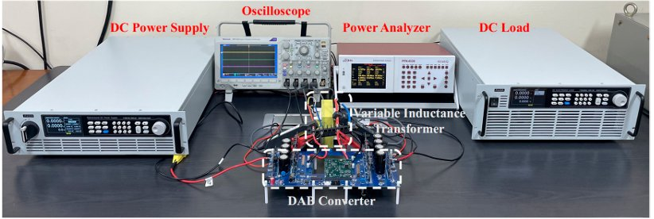

TECH 01 · 전력변환POWER CONVERSION
DAB 컨버터 위상각 보상 제어Phase-Shift Compensation for DAB Converters
SiC MOSFET 기생 커패시턴스·다이오드 전압을 반영해 데드타임 위상 오차를 보상합니다. 출력전압 정확도 93.17% → 97.16%.Compensates the dead-time phase error caused by SiC MOSFET parasitic capacitance and diode voltage. Output-voltage accuracy 93.17% → 97.16%.